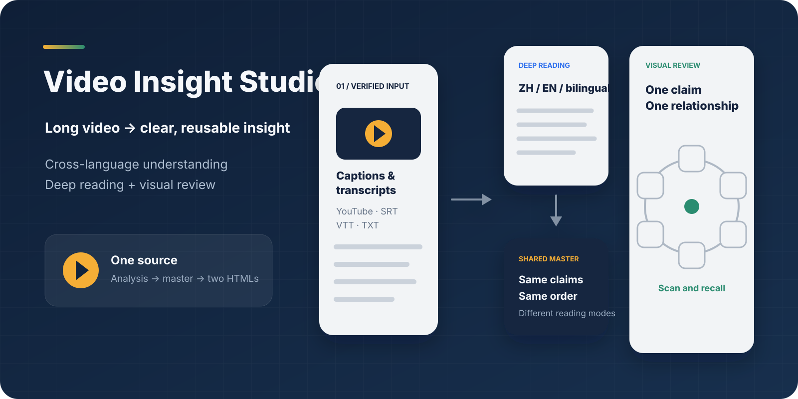
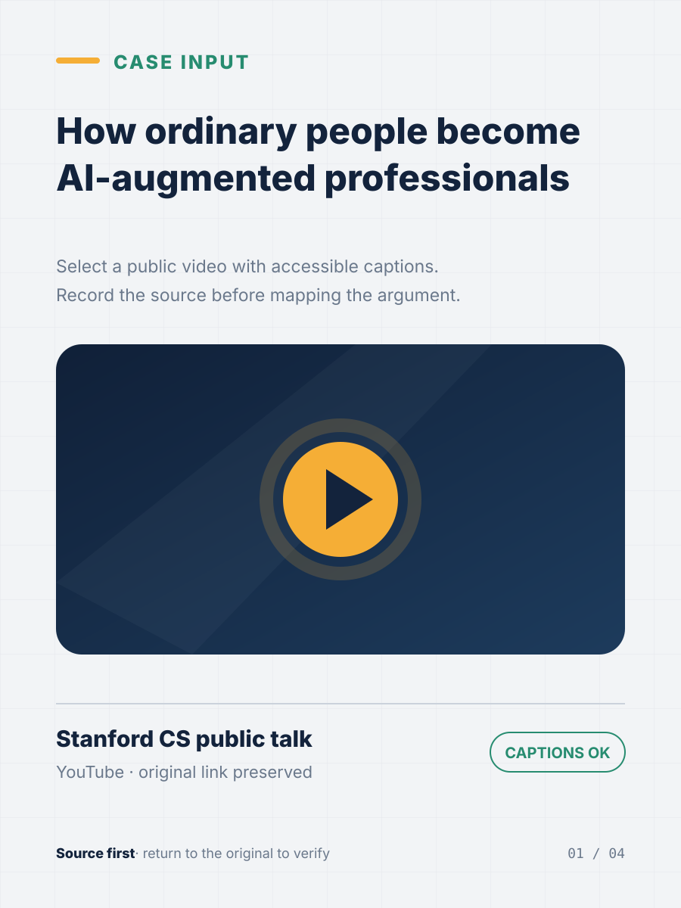
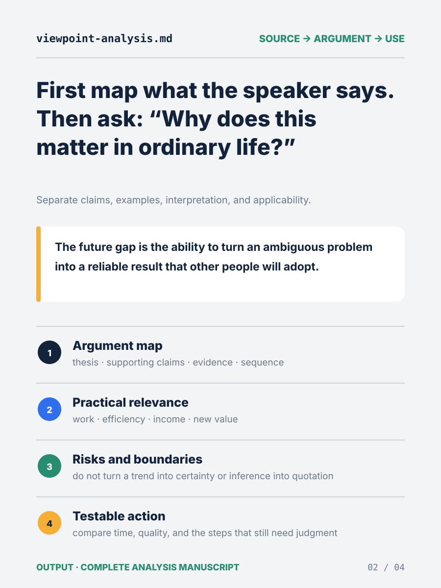
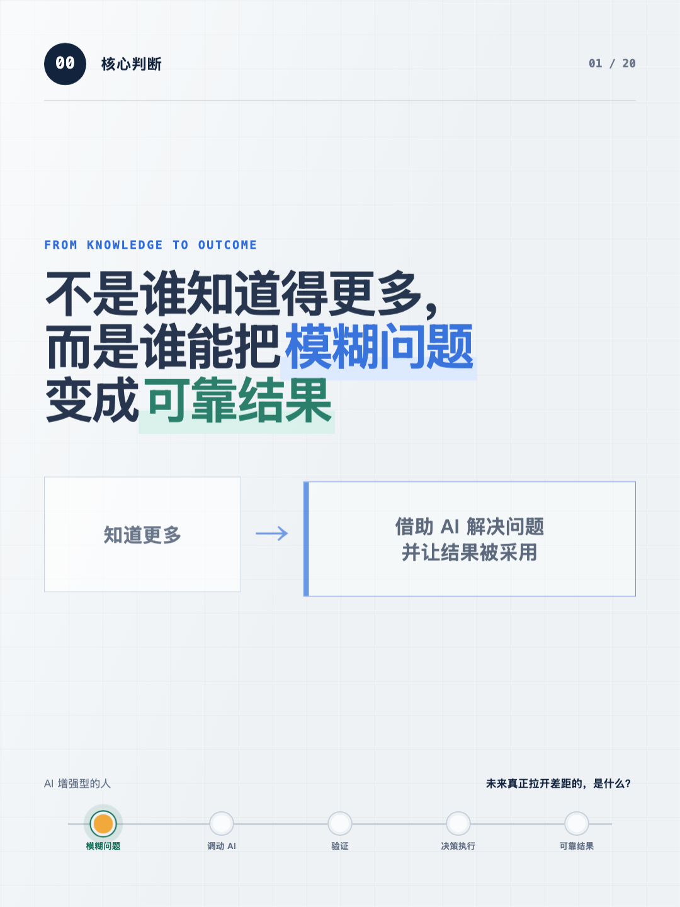
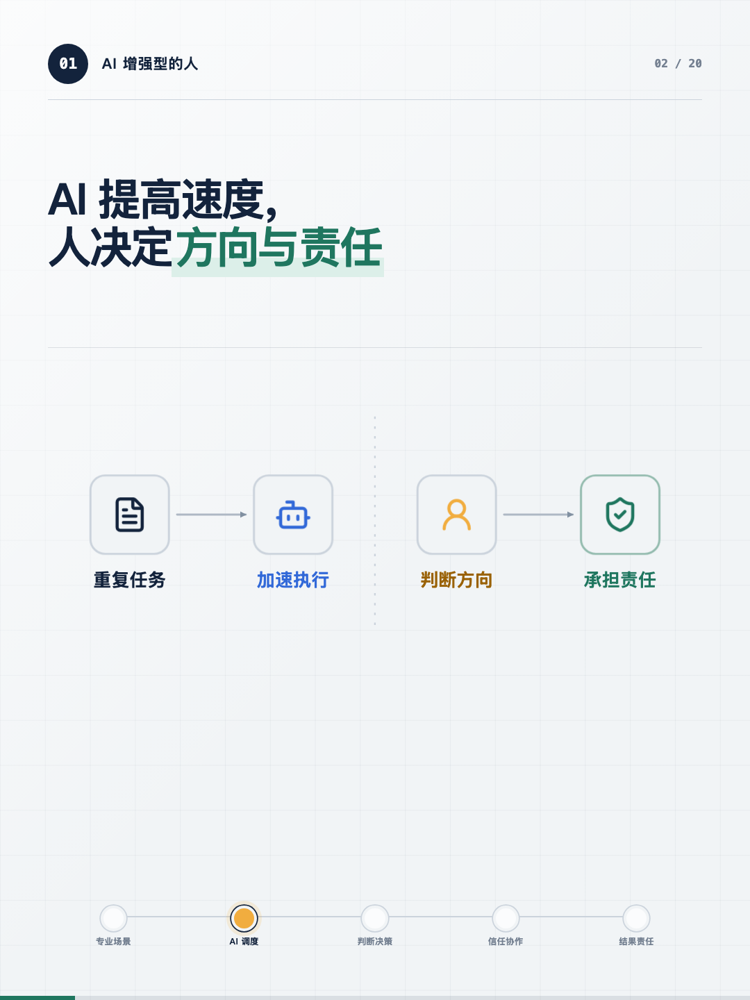
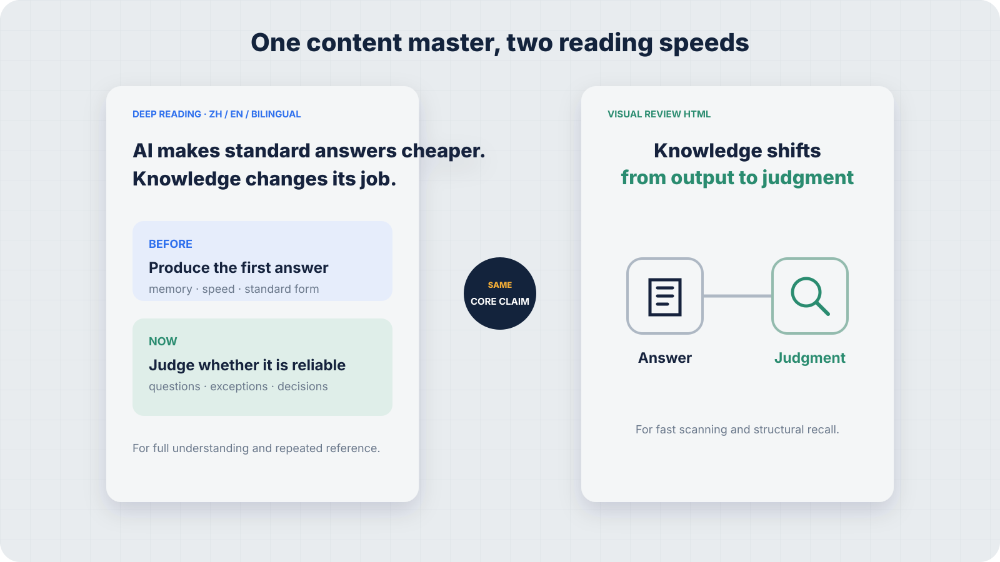

Understand and revisit
Includes explanations, examples, boundaries, and possible actions in the language mode you choose.
ChineseEnglishBilingual
Open deep reading →
For people who cannot follow the source language, do not have time to watch the full recording, or want more than a shallow summary. It turns videos, subtitles, interviews, and podcast transcripts into source-grounded analysis with two reading modes: deep reading and fast visual review.
Choose Chinese, English, or paired bilingual pages without first understanding the source language.
Scan the visual structure first, then open the deep-reading version for arguments, examples, and boundaries.
Extract the thesis, supporting claims, evidence, and logical sequence instead of collecting isolated quotes.
Explain what the ideas mean for work, learning, time, income, and risk, then identify a testable next step.
Separate the speaker's claims, examples, analyst interpretation, and verifiable facts.
Single-file, searchable, and reopenable offline—without PowerPoint or a temporary localhost link.
This example starts with a Stanford CS talk on YouTube, then shows the source record, the viewpoint-analysis manuscript, and two HTML reading experiences. The final screenshots intentionally use Chinese to demonstrate cross-language output from an English-language source.

Preserve the platform, topic, and original link for later verification.

Separate the argument, its boundaries, and useful applications.

Keep the explanation, examples, boundaries, and possible actions.

One claim and one visual relationship per page for fast recall.
The deep-reading version supports full understanding, saving, and repeated reference. The visual version compresses every page into one core claim and one relationship for fast scanning and later recall.
Includes explanations, examples, boundaries, and possible actions in the language mode you choose.
ChineseEnglishBilingual
Open deep reading →Pairs one core claim with one concise relationship diagram for scanning now and reviewing later.
Open visual review →
The skill separates source evidence, speaker claims, examples, analytical interpretation, and applicability before designing any page. Both HTML versions come from one shared content master, then receive structural validation and browser-based visual QA.
gh skill install tuyaya194-png/video-insight-studio video-to-insight-html \ --agent codex \ --scope user
After installation, ask: “Use $video-to-insight-html to analyze this video, create a bilingual deep-reading version, and generate the visual review HTML.”